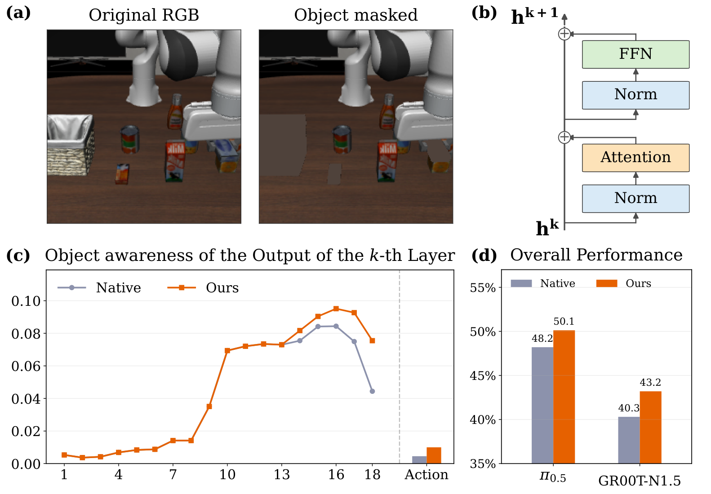
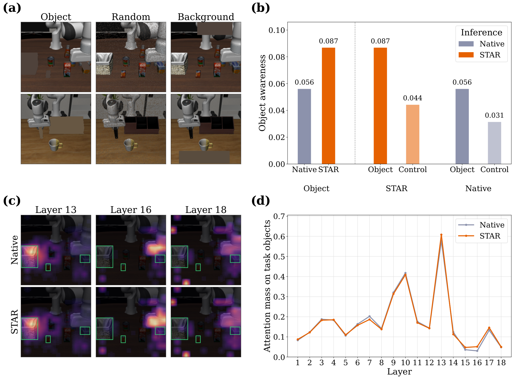

STAR：让动作表征在后层继续依赖任务对象
关键问题：VLA 的中间层已对任务对象产生响应，但响应可能在接近动作输出的后层减弱。仅凭注意力图，还无法判断对象信息是否充分影响了最终动作。
关键做法：冻结模型权重，在网络后段对残差更新（residual updates）做跨层指数移动平均（EMA），用近期本体运动状态调节较早层更新所占的权重。设计意图是：平稳推进时多保留已有更新方向，旋转、接触变化或精细调整时减弱干预。
我的判断：STAR 提供了一个成本较低、值得复用的推理期干预模块。实验支持有条件的后层混合能够提高成功率；要将收益归因于对象信息的保留，还需要更强的对照。方法虽不增加训练，效果仍明显依赖参数校准。
1. 背景信息与阅读范围
- 论文：STAR: Steering Action Representations during Inference，arXiv:2610.41009v1，提交于 2026-10-29，预印本。
- 团队：北京大学、理想汽车、BIGAI、威斯康星大学麦迪逊分校；前三位作者共同一作，Yiwu Zhong 为通讯作者，以 PDF 首页为准。
- 版本说明：arXiv 摘要页使用上面的标题；本次获取的 PDF 与 HTML 全文 标题为 STAR: Steering Action Representations with Proprioception for VLA Inference。
- 材料范围：阅读正文及附录 A/B，核对主表、方法公式和原图；补充检查官方代码固定快照。以下是论文阅读与代码静态检查，没有运行策略或复现实验。代码首页与论文存在结果、配置差异，见第 5 节。
2. 关键问题：模型对对象的响应，能否持续到动作生成？
沿用 Figure 2 的任务例子：把右侧摩卡壶放到炉灶上。模型需要根据语言选对对象，再依据壶、炉灶与机械臂的当前关系生成动作。如果遮挡对象后，末层动作表征几乎不变，就需要追问：对象虽然出现在输入中，是否真正影响了动作？这里借用论文任务说明问题，并不表示论文展示了该任务的一条完整失败轨迹。
作者将任务对象区域替换为整张图像的平均 RGB 值，比较遮挡前后的动作隐状态（action hidden state）：
$k$ 是网络层，$m_o$ 是对象遮挡，$\varnothing$ 是原始图像；其他输入保持不变。这个 object-awareness score 衡量遮挡对象引起的隐状态相对变化，无需额外训练语义探针。它反映对象敏感度，不能直接解释为“模型理解对象的准确率”。（§1、Appendix A.2，Eq. 15）

来源：原文 Figure 1。重点看 (c)：π₀.₅ 的对象敏感度在中后层较高，到最末层下降，STAR 缓解了下降。此处是案例曲线，不要把读图数值与 Figure 3 的汇总均值混用。
作者将这一现象称为 late-layer grounding gap。我更愿意把它视为需要通过干预检验的诊断线索：归一化距离下降也可能源于隐状态尺度变化或表征的重新编码，尚不足以证明对象语义被“遗忘”。STAR 进一步检验了一个问题：改变后层表征的更新方式，能否改善闭环执行？
3. 关键方法：保留跨层更新趋势，由运动状态决定保留多少
3.1 一次规划中，干预发生在哪里？
在摩卡壶任务的一次规划中，图像、指令和当前本体状态输入原 VLA，前面的网络层照常计算。近期末端位置与姿态用于计算混合系数 $\beta_t$。进入最后三分之一层后，模型将当前层的残差更新与此前各干预层累积的更新混合，再加到隐状态上；首个干预层只负责初始化。最后，原动作头生成动作块（action chunk），执行其中一段后重新观测。
作者希望机械臂连续向壶移动时，较多保留已有更新方向；转动末端、改变接触或局部调整时，则提高当前层新更新的权重。这是一种依据运动状态设定的启发式规则，系统没有显式识别“正在抓壶”或“已经接触炉灶”等任务阶段。（§3.1–3.6）
3.2 EMA 平均的是 residual update
令 $\Delta h_t^k$ 为第 $k$ 层产生的残差更新。原计算为 $h_t^k=h_t^{k-1}+\Delta h_t^k$；STAR 在 $k>p$ 时改成：
$n$ 是层数，$m_t^k$ 是本次前向传播中沿网络深度累积的更新趋势；同一次规划的各混合层共用 $\beta_t$。较大 $\beta_t$ 更重视之前层的更新，较小 $\beta_t$ 更重视当前层的更新；$\beta_t=0$ 时该式退回原更新。实际区间的下界大于零，因此“保守”通常是减弱干预，不是完全关闭。（§3.2，Eq. 2–5）
公开代码以首个干预层自身的 $\Delta h$ 初始化 $m$，此前未干预的层不积累动量。π₀.₅ 最后六层从第 13 层开始时，第 13 层只做初始化，输出不变，第 14 层起才真正混合。因此，“继承较早层”在实现中首先指混合区域内较早的层，并非另行抽取前十二层的对象方向。代码：初始化与混合
这里有两种不同的累积过程：残差动量沿网络深度累积，本体统计随机器人运行时间累积。公开 π₀.₅ 实现在每个 flow/denoising step 重新初始化残差动量，因此不会将上一机器人时刻的隐状态带入当前时刻。STAR 平滑的是层间残差更新，没有直接对输出动作做时间平滑。代码：每次 flow step 重置
3.3 本体运动如何决定混合强度？
设 $d_t=p_t-p_{t-1}$ 为末端位移，$R_t$ 为姿态。作者只使用当前及过去观测构造四个量：
| 信号 | 定义 | 在调度中的作用 |
|---|---|---|
| 方向连续性 $c_t$ | $\cos(d_t,d_{t-1})$ | 较高时倾向加强混合 |
| 平移尺度 $v_t$ | $\|d_t\|_2$ | 较高时倾向加强混合 |
| 平移突变 $j_t$ | $\|d_t-d_{t-1}\|_2$ | 较高时倾向减弱混合 |
| 旋转变化 $\omega_t$ | $d_{\mathrm{rot}}(R_t,R_{t-1})$ | 较高时倾向减弱混合 |
先分别用过去 $W=f_{\mathrm{ctrl}}T_w$ 个历史样本做 z-score，得到 $z_t^x$；再计算加权分数 $r_t$，并用历史分数的中位数和四分位距做第二次归一化：
$\mathcal R_t$ 也只包含当前之前的分数；$w_c,w_v$ 为正，$w_j,w_\omega$ 为负，$\kappa$ 控制响应的陡峭程度。两级归一化使调度依据近期运动的相对变化，而非通用的绝对速度阈值。即使同为直线运动，$\beta$ 也会随历史分布变化，不能仅凭运动方向判断其大小。（§3.3–3.6，Eq. 6–14）
两处术语需要限定含义。文中的 causal 指计算只使用当前及过去观测，不代表这些信号与任务阶段之间的因果关系已经得到证明。表格将 $j_t$ 称为 jerk，但其公式实际是位置的二阶差分范数，正文也称其为 acceleration-like change，与严格意义上的三阶时间导数不同。
STAR 直接混合模型自身的残差更新，由本体状态调节强度，无需训练新方向或增加对象检测器。对象遮挡与梯度分析只用于诊断，不参与部署时的干预。DTP 根据注意力剪除视觉 token；STAR 的干预位置则是残差更新。相较于作者认为最接近的 DAMO，STAR 主要增加了基于机器人本体状态的强度调节。（§2.2–2.3、§4.3）
4. 数据与对照：冻结同一策略，比较推理方式
主实验比较 Native、DTP 与 STAR，权重保持冻结。SimplerEnv 上使用 GR00T-N1.5 和 OpenVLA-7B；LIBERO-PRO 上使用 GR00T-N1.5 和 π₀.₅，并非三个模型在两个基准上做了完整交叉。（§4.1–4.3）
- SimplerEnv：Google Robot 仿真操作，包括开/关抽屉、放入抽屉、抓可乐罐、移近目标和拾取对象；OpenVLA 只报告前五项，GR00T 报告六项。
- LIBERO-PRO：语言改写（lan）、对象属性（object）、初始布局（swap）、任务目标（task）、视觉环境（env）五类变化，每类十个任务。论文明确给出 π₀.₅ 的 STAR 评估为每任务 50 episodes，共 2,500 episodes；不据此推定其他设置的重复数。
- DTP：作者采用的 training-free 注意力侧对照，需要额外一次前向传播来取得剪枝信号。STAR 不为干预额外跑一遍模型；对 flow 模型而言，这不表示取消原本的多步去噪。
5. 关键结果：平均收益存在，但高度依赖任务与参数
5.1 主实验：四个组合平均改善，π₀.₅ 的收益并不均匀
首先看最直接的问题：冻结同一个策略，只改变推理时的内部更新，能否让机器人多完成一些任务？ 作者比较原始推理 Native、注意力侧干预 DTP 和 STAR。下表来自论文 Tables 1–2，成功率单位为 %，差值单位为百分点：
| 基准 / 模型 | Native | DTP | STAR | STAR − Native |
|---|---|---|---|---|
| SimplerEnv / GR00T-N1.5 | 41.0 | 40.0 | 46.3 | +5.3 |
| SimplerEnv / OpenVLA | 30.3 | 34.3 | 36.0 | +5.7 |
| LIBERO-PRO / GR00T-N1.5 | 40.3 | 40.3 | 43.2 | +2.9 |
| LIBERO-PRO / π₀.₅ | 48.2 | 47.7 | 50.1 | +1.9 |
四个模型—基准组合都高于 Native，也都高于 DTP，支持完整 STAR 能够改善这些设置下的执行。 对四组已舍入均值的增益做等权平均，得到 3.95 个百分点，与摘要的“4.0”相符；这是组合等权的汇总，不是汇集全部 episode 后的成功率增益。接下来需要看，这个平均值是否掩盖了某些条件下的退步。
π₀.₅ 在任务目标变化子集（task split）上的成功率从 6.8% → 18.8%，object 从 66.2% → 67.0%；lan 92.8% → 92.6%、swap 9.2% → 7.2%、env 65.8% → 65.0% 则均下降。平均增益主要来自 task split，尚不能据此认为模型对每类扰动都更鲁棒。空间布局和任务目标变化仍然困难。（Table 2）
SimplerEnv 上 STAR 的两模型平均值优于 DTP，但也不是逐任务占优：OpenVLA 的 Move Near 为 61.7%，低于 DTP 的 69.0%。（Table 1）
5.2 收益依赖何时混合、从哪层开始，也依赖参数校准
STAR 同时引入了跨层混合和本体状态调度。要判断调度是否有贡献，先比较固定强度与动态强度：在 OpenVLA / SimplerEnv 上，四个固定 $\beta$ 中最好的成功率为 31.6%，完整 STAR 为 36.0%。这支持根据运动状态调整强度，比一直采用这些固定值更有效。（Table 4）
提前混合是否还能保留收益？在同一设置下，从首层开始，成功率只有 25.7%；从三分之一深度之后开始为 27.6%；限制在末三分之一才达到 36.0%。这组对照说明，后层干预的位置本身是实质设计，并非保留的早层更新越多越好。（Table 5）
动态调度仍需要校准。 将区间从 $(0.25,0.55)$ 改为 $(0.35,0.55)$，成功率降到 28.9%，甚至低于 Native 的 30.3%。因此，完整方法的正收益不能外推到任意一组动态参数。论文列出了不同模型/基准的参数，却未充分说明独立调参集与参数选择过程；training-free 不等于 tuning-free。（Tables 4、7）
完整消融结果：强度区间、起始层与四种本体信号
| 要检验的设计 | 对照结果 | 完整 STAR | 证据 |
|---|---|---|---|
| 固定强度是否足够 | 四个固定 $\beta$ 中最好为 31.6% | 36.0% | Table 4 |
| 动态调度是否不需校准 | 区间 (0.35, 0.55) 仅 28.9%；(0.15, 0.55) 为 31.2% | 区间 (0.25, 0.55)：36.0% | Table 4 |
| 是否越早混合越好 | 从首层开始 25.7%；从三分之一深度之后开始 27.6% | 末三分之一：36.0% | Table 5 |
| 四种本体信号是否互补 | 去掉任一信号降至 30.1%–31.7% | 36.0% | Table 3 |
去掉任一种本体信号，成功率降至 30.1%–31.7%；仅保留“平稳推进”的两个正向信号为 29.3%，仅保留突变/旋转信号为 33.2%，无本体证据版本为 27.8%。这些比较进一步支持四类信号在当前调度中的共同作用，但没有单独检验干预时机与强度分布各贡献多少。（Table 3；后续对照见第 6 节）
本节消融均在 OpenVLA / SimplerEnv 上进行。作者仅对 Table 4 明确说明结果取八次评估的平均值，表中未报告方差或置信区间。
5.3 机制证据：对象敏感度提高，注意力图变化很小
成功率提高以后，还要追问它是否来自更充分地利用任务对象。Appendix A 仅在 π₀.₅ / LIBERO-PRO 上做诊断：除遮挡对象外，再遮挡相同像素数的随机散点，或面积相近的背景矩形，并取两种控制响应的较大值。这里除了观察对象敏感度是否提高，还要比较对象区域相对控制区域的响应比是否提高，以区分整体敏感度与对象选择性的变化。

来源：原文 Figure 3。看 (b) 的对象/控制差别，再看 (c)(d) 近似不变的 attention；这两组现象共同说明，attention 可视化不足以观察这次干预的效果。
在第 18 层，平均对象敏感度从 0.056 → 0.087，作者报告增益比 1.554；对象敏感度与控制敏感度的比值从 1.806 → 1.977。相比单独的对象遮挡曲线，这组对照更能说明响应是否具有对象选择性。两个比值回答的问题不同：前者衡量相对 Native 的敏感度增幅，后者衡量对对象区域相对于控制区域的选择性。（Appendix A.2）
隐状态更敏感，还需要检查这种变化是否延伸到最终动作。作者因此计算动作输出对输入像素的梯度，观察其中分配给对象区域的比例。Figure 4 中，五个 split 的这个比例均提高，配对差值多数为正；Figure 5 还展示了定性热图。这提供了从隐状态到最终动作的补充证据。不过，局部梯度更集中于对象，并不保证动作正确：前面的 π₀.₅ 成功率中仍有三个 split 下降，两层证据需要分开判断。（Appendix A.3，Eq. 19–21）
最后再看注意力：干预前后的注意力图相似，对象区域 attention mass 曲线也接近。结合前两项诊断，这说明仅靠注意力可视化容易漏掉这次干预造成的变化。STAR 没有直接编辑注意力矩阵，但修改前层隐状态仍可能影响后层注意力；现有观察支持变化很小，不能写成严格不变。（Appendix A.4）
动作梯度指标的具体构造
作者把 action chunk 的平均动作投影到其停止梯度的自身方向，对输入像素求梯度，再计算对象区域占全图梯度幅值的比例。这个量反映局部梯度的空间分配，不能单独证明完成长时任务或具备更好的对象语义。（Appendix A.3，Eq. 19–21）
5.4 实机与复现边界
实机评估进一步检查仿真中的增益能否出现在真实执行中。任务是把梨放入碗中，Native 与 STAR 共用经过任务适配的 π₀.₅ checkpoint：Native 成功 17/40（42.5%），STAR 19/40（47.5%）。结果方向为正，但只多成功两次，证据规模还很小。单张 RTX 3090 上额外推理延迟为 3.3%；论文未报告绝对延迟，这一比例也不能直接外推到其他架构。（§4.5、Table 6）
这项实机结果也有一个使用前提：作者先用 **100 条轨迹（episodes）**微调 π₀.₅ 15,000 steps。STAR 本身无需额外训练，实机评估的基础策略则已完成任务适配。
复现还受公开实现范围与版本差异约束。本笔记核查的固定代码快照只包含 OpenPI π₀.₅ / LIBERO-PRO 实现，未包含 OpenVLA、GR00T-N1.5、SimplerEnv 或实机实现；其 README 与论文报告的成功率及调度参数也不一致，哪套配置对应哪组结果仍是 [?]。
论文与固定代码快照的两处差异
| 项目 | 论文 PDF / HTML | 同一代码快照的 README |
|---|---|---|
| π₀.₅ / LIBERO-PRO 的 STAR 均值 | 50.1%（Table 2，Figure 1） | 50.4% |
| π₀.₅ 调度参数 | $\kappa=2.30$；$(w_c,w_v,w_j,w_\omega)=(0.25,1,-0.125,-0.25)$（Table 7） | $\kappa=4.25$；权重 $(1,1,-0.375,-2)$ |
两者都给出 $\beta\in[0.25,0.55]$、最后六个 action-expert 层、10 Hz 环境与执行五步再规划。上表差异已在此前阅读中核实，现有材料尚未解释对应关系。复现时应锁定版本，分别记录论文配置、README 配置与配置类默认值。README 配置原文
6. Insights：哪些实验能进一步检验机制解释？
1. 对象依赖提高是中间指标，不是成功率的充分条件。 Figure 4 的梯度比例在五个 split 都上升，但 Table 2 中 π₀.₅ 有三个 split 下降。这种差异说明，对对象像素更敏感与利用对象信息生成正确动作，需要分开评估。一个可检验的后续实验，是在同一批初始状态上配对记录敏感度变化与 rollout 成败，比较收益集中在视觉选物、空间定位还是接触执行阶段；不能仅凭 split 均值完成因果归因。
2. 动态调度的价值，需要与相同强度分布的无状态对照比较。 当前消融证明选定的动态策略胜过若干固定值，却尚未排除收益主要来自 $\beta$ 的取值分布。可以打乱同一条轨迹的 $\beta_t$ 时间顺序，或移用另一条轨迹的序列，保持范围与边际分布接近；若按真实运动时序对齐的调度仍更好，就能更有力地支持：收益来自干预时机与运动状态的匹配，而不只是干预强度的分布。
3. 跨层平滑也可能起到一般正则化作用。 STAR 的更新方向没有经过对象选择，遮挡诊断也不能完全排除隐状态尺度的影响。可以加入等范数随机方向、范数保持的 residual 平滑等对照，同时分开报告对象遮挡距离的分子与隐状态范数。若只有保留特定较早层方向才能改善对象选择性与成功率，才更能支持作者提出的“携带对象相关方向”这一机制解释。当前结果已支持模块的有效性，但还不足以区分该机制与一般更新平滑的作用。
实际使用需要满足几个前提：能够访问中间隐状态，具备连续且可信的末端本体观测，并确认目标模型出现了相似的末层敏感度下降。作者也明确指出黑盒策略无法直接应用，双臂等更复杂具身形式尚未验证。（§5 Limitations）
7. 连接与发现
- Observing-and-Controlling-Features-in-Vision-Language-Action-Models-线性观测与闭环控制：同样根据当前状态调整内部干预；该文用目标特征 observer 的误差，STAR 用本体运动动态调节网络自身更新的混合。
- Mechanistic-Interpretability-for-Steering-Vision-Language-Action-Models-语义神经元与动作干预：对照方向的来源——按语言语义筛选神经元，与在线继承自身跨层 residual updates；两者都需区分内部干预、行为可控性和任务成功。
- Not-All-Features-Are-Created-Equal-VLA机制与因果干预：对象敏感度、动作变化和闭环成功是不同层次的证据，适合一起思考怎样建立机制归因。
#Research #Paper #Vision_Language_Action #Activation_Steering #Visual_Grounding
📝 修订记录
- 2026-11-04：围绕执行收益、调度设计和对象机制重组结果解释；把参数消融与代码配置细节折叠，保留各任务下降、校准失效及小规模实机证据的限定。本轮基于既有笔记整理表达，未重新全文核验原论文。